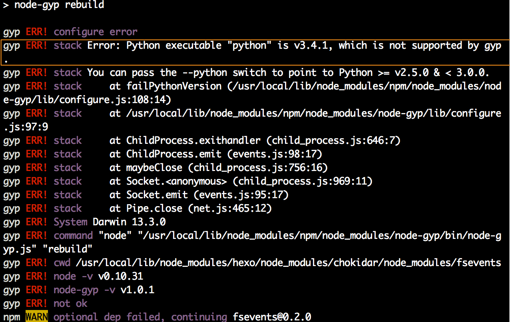
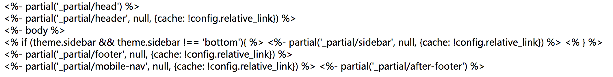
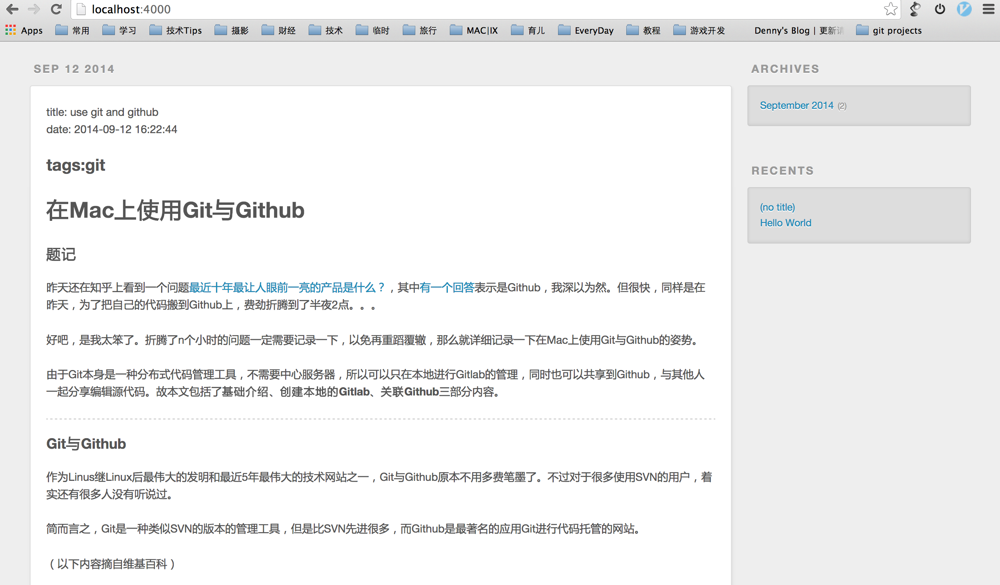

之前一直使用的Wordpress做一些简单站点，所以决定认真写文章以后，还是先考虑用Wordpress。
但是网站内容早早就弄好了，审批却迟迟过不了，第一次提交给我以莫名其妙的原因退了回来，第二次审批，则陷入了漫长的等待。就在等待的过程中，发现使用Github Pages不仅可以方便的建立静态站，也能绑定域名，这样就能成功的绕过国内的审批在Github上建站了。
稍微研究一番后，发现了一片广阔天地，原来现在大家都在使用静态网站构建工具建站，对于主要写文字的blog来说，这确实最好的办法。而能在Github上建站的工具也有很多，Jekyll，Octopress，Hexo，Pelican等等。于是我心中的折腾热情又开始燃起，经过一上午的选型（最终选择了Hexo），和一晚上的折腾后，有了现在的这个站点。
平台选择
wordpress
wordpress是世界上应用最为广泛的个人主页/博客解决方案，使用php编写，经过多年的发展已经非常成熟，各种插件与模板一应俱全，是新手建站的首选。如果想使用wordpress建站，可以参见我的这篇使用Wordpress搭建个人博客详尽指南。
但是wordpress建站虽然简单，在新时代却被越来越多的个人站所抛弃。wordpress的主要缺点就是插件太多之后，慢慢的变得臃肿复杂起来。而且对Markdown的支持实在一般，现在我已经习惯了用Markdown来写文章，而wordpress的各种Markdown总有各式各样的问题。另外，由于站点本身的特性，需要数据库支持，在原来的时代本来这不是什么缺点。但是对于个人的博客来说，完全没必要去维护数据库，静态站确实是更好的解决方案。
Jekyll / Octopress
Jekyll是用Ruby开发的静态网站生成工具，且得到了Github的官方支持，可以直接在Github服务端进行编译，只需要直接上传写好的md文件即可，是当前最为流行的静态站点方案。Octopress基于Jekyll，配置更为简单，但是需要在本地编译完成后再上传到Github。
这两种方案成为了大家最主流的选择。但是Jekyll/Octopress使用起来还是有点复杂，需要个性化的东西太多，而Octopress的编译速度也比较慢。
Hexo
Hexo是一个台湾大学生使用Node.js写的静态网站生成工具。
与Jekyll/Octopress相比，Hexo最大的优点就是简单与快。非常容易上手，只需要记住简单几个命令，很快就能跑起来，，编译速度也非常快。
要说缺点，就是使用人数目前还是相对Jekyll/Octopress较少，资料较少，可用插件和主题也较少。但是随着Hexo得到了越来越多人的青睐，资料和主题已经多了很多，我目前觉得已经够用了，所以还是选择了Hexo，使用几天下来，也非常满意。
Hexo的安装与本地配置step by step
安装Node.js
到Node.js的官方网站下载并根据自己的平台安装。
安装Hexo
安装Hexo只需要一句代码即可：
$ sudo npm install -g hexo
但是我在安装时，却报错了。原因一目了然，因为我系统上的默认Python版本为3.4，而安装需要调用2.x版本的Python。解决办法可以查看修改自己的Mac系统上默认Python版本。

安装git并配置自己的Github
这两步我已经在之前的文章里写到了，可以参见这篇在Mac上使用Git与Github。
初始化
安装完毕后，需要在本地创建自己的站点文件夹，并在其中进行Hexo的初始化。
$ hexo init <folder>
进入文件夹，我们可以看到结构是这样的：
|-- _config.yml
|-- package.json
|-- scaffolds
|-- source
| |-- _drafts
| |-- _posts
|-- themes
其中，我们需要知道的有：
- _config.yml 全局的配置文件
- source/_drafts 草稿箱
- source/_posts 文件箱
- themes 主题目录
生成静态页面与启动
初始化完成后，我们可以生成静态文件（在站点目录下执行此命令）：
$ hexo generate
或者
$ hexo g
这个命令的作用就是将用Markdown编写的MD文件编译成为html文件，我们在编写修改自己的MD文件后，都需要运行一下此命令来重新生成一下html文件。
然后就可以在本地运行服务看看效果啦，启动服务器：
$ hexo server
或者
$ hexo s
默认的端口为4000，这时候进入：http://localhost:4000 应该就可以看到生成的页面了。
但是我在执行完毕后，却无法正确显示页面，而是将 index.html 的源码显示了出来。

后来查到了问题，2.6.0版后的Hexo需要手动安装EJS，stylus，marked三个插件才行。
$sudo npm install hexo-renderer-ejs --save
$sudo npm install hexo-renderer-stylus --save
$sudo npm install hexo-renderer-marked --save
安装完成后，页面就能够正常显示了。

开始写文章
Hexo使用Mardown来写文章，放置在 /source/_posts 下。
下面我们来生成一篇新的博文：
$ hexo new [layout] "postName"
其中，layout为可选参数，可自定义文章的部分自动生成格式，我们后文再详细说明。
执行完命令后，可以看到 /source/_posts 目录下即生成了一篇名为 postName.md 的文章。我们编辑完这篇文章后，保存并重新生成静态文件就可以看到效果啦。
关于Markdown，实在是一种非常好用的排版语言，用了就停不下来。可以在这里学习Markdown的简单用法。
关于layout
我们在使用$ hexo new "postName"新建文章后，可以看到自动生成了开头的几行。如：
title: post name
date: yyyy-mm-dd
tags:
description:
---
这就是hexo中的layout。hexo文章的头部文件是用YAML来写的，通过这几个标签来定义文章的标题，tag，描述等。具体的语法，请参见YAML的wikipedia。
而如果我们想让程序自动生成开头。可以自定义layout文件来生成。打开 scaffolds/ 文件夹，可以看到目录下的几个md文件为系统提供的几个md文件。
使用$ hexo new "postName"命令创建新文件时，默认使用的是 post.md 模板，如果想使用其他模板，如 page，使用$ hexo new page "pageName"即可。我们可以在这里新建自己的layout文件，或者修改原有的layout文件，实现自定义layout。
个性化Hexo
嵌入图片
Markdown中，插入图片的方法是：

如果想使用Github存储图片，我们可以在 source/ 文件夹中新建 img 文件夹，将图片放在此目录下，然后在文章中使用 格式插入图片即可。
如果文章生成目录带有日期等层级，此处需要根据目录适当进行调整。
另外也可以使用各种云存储或者VPS主机进行存储，这里的图片url直接填写绝对路径即可。
主题
Hexo的主题目前可供选择的已经有很多，可以在官方的主题列表选择自己喜欢的主题并下载到本地。
$ git clone <repository> themes/<theme-name>
然后打开 _config.yml 文件，将其中的 theme:选项中的内容改为你下载的主题文件夹的名字。
我使用的主题是：pacman，这是一个很漂亮的主题，而且作者更新的很快，能适配最新版本。
具体的配置，可以查看作者给出的Pacman主题介绍，还有这个Hexo模板系统和pacman的修改。
配置网站信息
通过修改 _config.yml 文件的 # Site 部分我们可以添加个人信息。
# Site
title: 网站名称
subtitle: 副标题
description: 网站描述
author: 作者
email: 邮箱
language:
# URL
url: 网站域名
添加多说评论
Hexo默认的社会化评论系统使用的是disqus，可支持Fackbook，Twitter等，但是在国内，你懂的。我们需要替换成多说来支持微博、微信、qq空间、人人等账号进行评论。
在这里注册多说，并获得相关代码。
如果使用pacman主题，设置极为简单，打开主题文件夹下的 /pacman/_config.yml，找到duoshuo:部分，将 enable:设为true，然后将short_name:设为自己的多说shortname即可。
添加About页面
使用hexo添加自定义页面很容易，在 source/ 文件夹下建立 about/ 文件夹。然后在about/ 下添加 index.md 即可。
title: Page
---
About Me.
其他的自定义页面的添加也同理。
然后在 themes/pacman/_config.yml 中，找到menu:处，在下面添加：
About: /about
自定义404界面
加入自定义的404界面很容易，在 source/ 文件夹下新建 404.html 文件，然后填入你的代码即可。
推荐使用益云公益来帮助失散儿童。
关于摘要
与wordpress一样，在摘要内容结束处添加<!--more-->标签即可。
如果使用Pacman主题，作者表示：
为了提高打开首页的速度故首页不加载文章图片，只加载文章摘要。
因此我强烈建议大家在写文章的时候自己总结description并将其放在开头的front-matter中。
如果没有会截取<--! more -->内容前的140个字，如果你连这个都懒得写，没关系，依旧为你截取文章内容的前140个字作为摘要。
目前我都是使用description:来单独编写文章摘要了。
插件
安装插件：
$ npm install <plugin-name> --save
然后在 _config.yml 中添加
plugins:
<plugin-name> #插件名
即可启用。
升级插件：
$ npm update
卸载插件：
$ npm uninstall <plugin-name>
Hexo与Github
Github的设置
要在Github上搭建我们的站点，我们需要使用Github Pages功能。
以我的网站为例，我的github用户名为 jintongyao，则我需要在github上创建名为jintongyao.github.io的repository。
注册与创建repository，可以参见在Mac上使用Git与Github。
配置文件修改
在github网站设置成功后，我们需要在本地配置好配置文件。主要需要修改网站根目录下的 ._config.yml，找到deploy:选项后，设置如下：
deploy:
type: github
repository: git@github.com:jintongyao/jintongyao.github.io.git
branch: master
type 设置为github即可
repository github repository的ssh地址，需要将这里的 jintongyao 替换为你自己的username
branch 分支，默认即为master。
由于yml文件对格式要求很严格，一定要注意缩进与空格，很多时候设置失败就是由于缩进和空格导致的。
部署到Github
配置完成后，我们就可以上传到githib了，执行
hexo deploy
或者
hexo d
我们再来回顾下完整的修改内容->生成页面->部署过程，今后只需要执行这几步就可以轻松完成修改和部署：
修改md文件内容并保存
$ hexo clean #清除原文件
$ hexo generate #重新生成静态文件
$ hexo deploy #部署到Github
也可以直接创建脚本来一键重部署，$ touch redeploy.sh，
#!/bin/bash
hexo clean
hexo g
hexo d
关联自己的域名
域名的关联，可以在直接在自己的域名供应商处设置，也可以映射到DNSPOD进行设置。使用CNAME方式，将域名映射到自己的 username.github.io 即可。
设置完成后，需要在 source/ 文件夹中新建文件 CNAME ，内容为指向自己的域名，如：
www.jintongyao.com
这样就完成了一级域名的映射。
其他
参考文章
本文由金同尧原创，首发于JinTongYao’s blog，转载请注明出处。